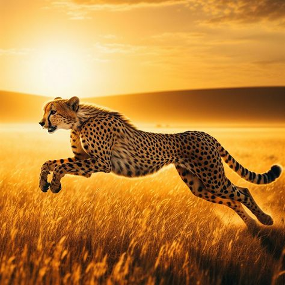
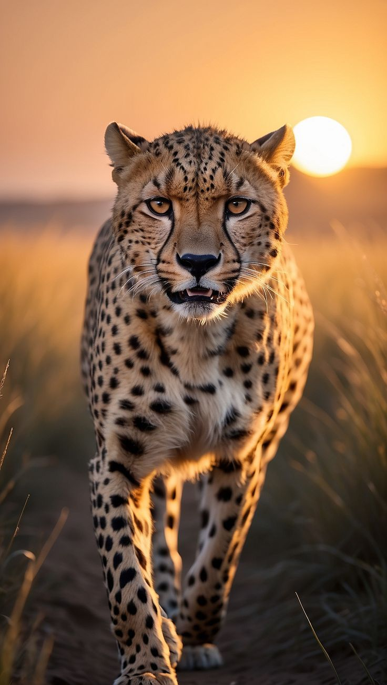

Узнать гепарда легко по стройному телу, пятнистой шерсти и тёмным полоскам, которые тянутся от глаз к уголкам пасти. Во время охоты он полагается на скорость и точность движений.


Гепарды общаются при помощи мурлыканья, щебетания и других звуков. В отличие от львов и тигров они не умеют издавать настоящий рёв. Эти удивительные животные нуждаются в защите и сохранении естественной среды обитания.